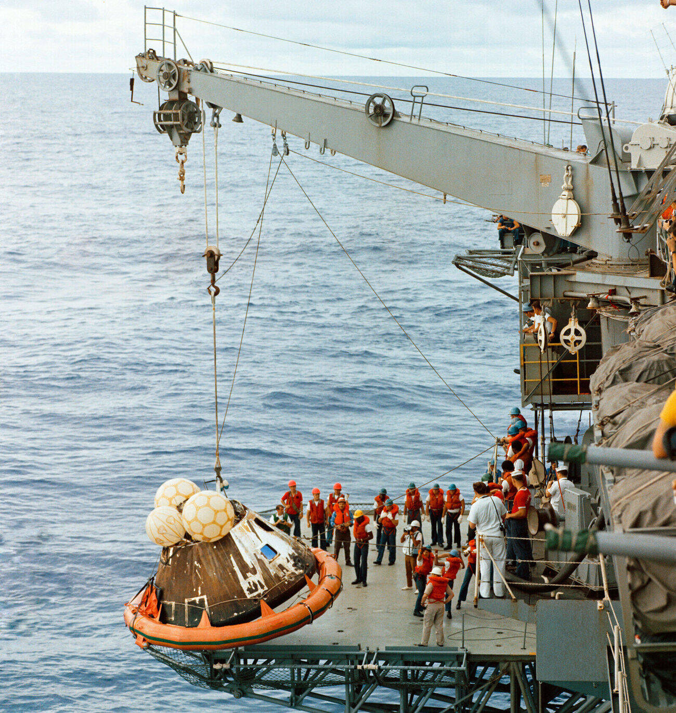

Recovery Operations

Getting Them Out
Recovery helicopters were over Odyssey within minutes, and Navy frogmen dropped into the swells beside it. But stabilizing a five-and-a-half-ton capsule in the open ocean takes patience: rigging the inflatable flotation collar and rafts took about half an hour. Then the hatch swung open, and one by one the astronauts were hoisted up into a hovering helicopter.
About 45 minutes after splashdown, that helicopter settled onto the deck of USS Iwo Jima. Lovell, Swigert, and Haise stepped out — pale, bearded, and exhausted — to a deck packed with cheering sailors and the ship's band.
Six Hard Days, Measured in Pounds
- Weight lost: 31.5 pounds between the three of them — about 50% more than any other Apollo crew. Lovell alone lost 14 pounds.
- Fred Haise: the worst off — a painful urinary-tract infection, with a fever that peaked near 104°F around splashdown. It took him weeks to fully recover.
- All three: dehydrated, sleep-starved, and chilled to the bone after days in a cold, powered-down spacecraft.
Aboard ship they got medical checks, hot food, hot showers, and the first real night's sleep since the explosion.
Odyssey Comes Aboard
No helicopter could lift the capsule — Odyssey weighed around 11,000 pounds. Instead, the Iwo Jima maneuvered alongside and hoisted it out of the water with the ship's crane. The heat shield that some had feared was cracked by the explosion turned out to be charred exactly the way a healthy heat shield should be. It had done its job perfectly.
The Long Way to Houston
- Night of April 17: rest and recovery aboard USS Iwo Jima
- April 18: helicopter to Pago Pago, American Samoa, then a flight to Honolulu — where President Nixon presented the crew with the Presidential Medal of Freedom, the nation's highest civilian honor
- April 19: home to Houston, to families, crowds, and long-overdue sleep
"Our mission was a failure but I like to think it was a successful failure." — Jim Lovell, in NASA's Apollo Expeditions to the Moon
🌍 Apollo 13: Final Tally
Distance traveled: ~622,000 miles
Moon landing: not achieved
Crew: home safe
Three astronauts left Earth.
Three astronauts came home.
The crew didn't save themselves alone. Next: the flight controllers and engineers who pulled them back from the far side of the Moon.